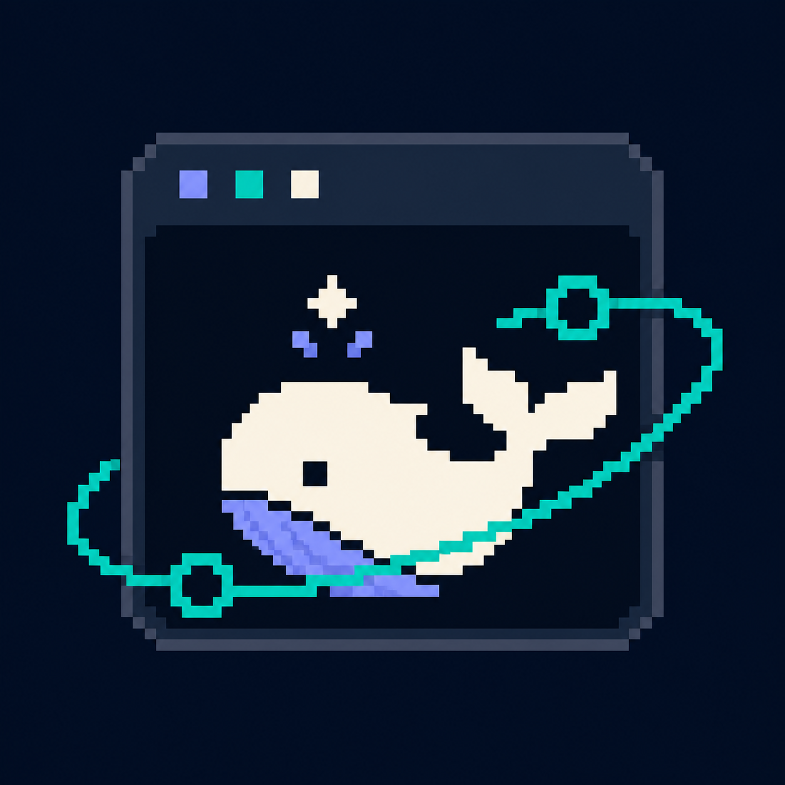

Local workbench
正在连接 DSH
启动本地 Web 服务，并加载与你浏览器中完全相同的工作区、会话、插件和外观配置。
正在检查 127.0.0.1:3080
请确认 dsh 已加入 PATH，或查看 故障排查文档。修复后关闭并重新打开应用。

Local workbench
启动本地 Web 服务，并加载与你浏览器中完全相同的工作区、会话、插件和外观配置。
请确认 dsh 已加入 PATH，或查看 故障排查文档。修复后关闭并重新打开应用。